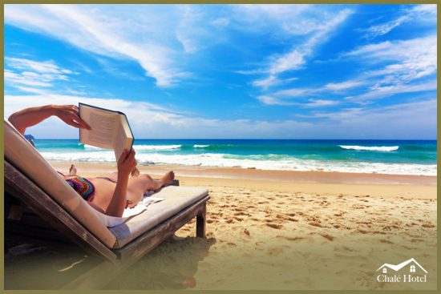
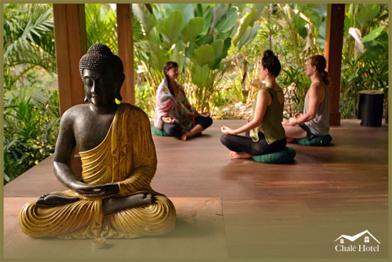

SOBRE O CHALÉ HOTEL
Chalé Hotel Localizado em diveros pontos no Brasil o Hotel é o destino perfeito para quem valoriza a natureza, saúde mental e acima de tudo, a tranquilidade.

Aqui, o ambiente intimista torna a experiência da hospedagem ainda mais fascinante. Há apenas 5,2Km do centro da Vila dos Pescadores e apenas 55 minutos do Aeroporto Internacional, a propriedade é emoldurada por centenas de coqueiros e possui resquícios de Mata Atlântica preservada, onde micos, corujas e pássaros diversos ainda vivem livremente.
Com uma maravilhosa estrutura e um eficiente time de colaboradores, o Hotel procura atender as necessidades de cada hóspede com o máximo de atenção e cuidado aos detalhes. As acomodações aliam conforto, aconchego e privacidade e estão equipados com arcondicionado, ventilador de teto, frigobar, TV, cofre, camas confortáveis, modernas e o aquecimento dos chuveiros são realizados por energia solar.
O restaurante por si é uma atração. Oferece um café da manhã variado e fiel às tradições da culinária regional, com opções de tapiocas, mungunzá, cartola, bolos, pães e geleias de frutas exóticas que podem ser degustadas logo no início do dia. Frutos do mar, massas, carnes e outras delícias estão disponíveis para almoço e jantar, sendo servidos à lá carte.
Na recepção 24horas da Pousada estão disponíveis informações sobre passeios de buggy, transfer para aeroporto, city-tour, passeios ecológicos e cursos de mergulho.
O hotel dispõe, ainda, de um espaço exclusivo para massagem e relaxamento com a Espaço Zen.

-

Apartamentos
São 10 tipos de acomodações para deixar você, sua família e amigos bem confortáveis. Temos suítes com piscina privativa, suítes com Hidromassagem e flats que acomodam até 8 pessoas.
-

Restaurante
A gastronomia do Chalé Hotel tem uma culinária contemporânea brasileira. Receitas preparadas com os melhores ingredientes, ressaltando o sabor dos alimentos. Temos uma equipe altamente qualificada e um ambiente sofisticado, com luz natural e uma vista extraordinária, proporcionando experiências inesquecíveis.
-

Espaço Kids
Temos espaço kids em funcionamento com diversas opções de recreações.
-

Espaço Zen
O espaço zen é um refugio no hotel para desacelera a mente e se reconectar ainda mais com o seu interior.